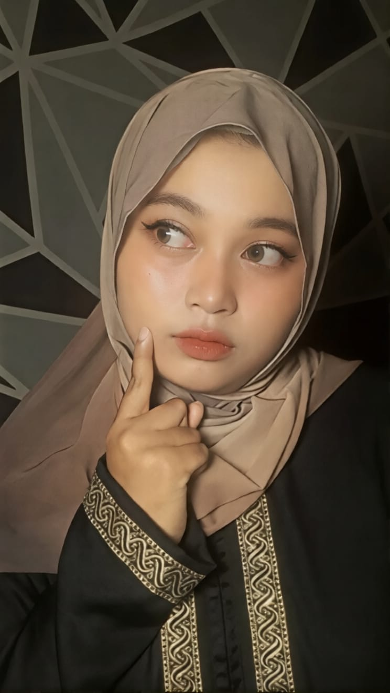

| Brand | Header | Biodata | Portofolio |
Selamat Datang di Website Saya
Saya adalah seorang mahasiswa informatika yang memiliki minat dalam pengembangan web dan teknologi. Di website ini, Anda dapat menemukan informasi tentang latar belakang saya, proyek-proyek yang telah saya kerjakan, serta kontak untuk berkomunikasi dengan saya. Terima kasih telah mengunjungi website saya!
Pelajari Lebih Lanjut
About Me
A brief introduction about myself
| Firda Alifatuz Zahro | informatics Student at Universitas Veteran Yogyakarta | Mahasiswa |
| virdazaraa@gmail.com | Baca Buku | Sleman Yogyakarta |
Portofolio
 BLOOMIFY adalah sebuah platfrom yang menyediakan layanan untuk membantu para florist dalam mengelola bisnis mereka. Dengan BLOOMIFY, para florist dapat dengan mudah mengatur stok bunga, menerima pesanan dari pelanggan, dan mengelola pengiriman bunga dengan efisien. Platform ini juga menyediakan fitur analitik yang membantu para florist untuk memahami tren penjualan dan preferensi pelanggan, sehingga mereka dapat meningkatkan layanan mereka dan memperluas jangkauan bisnis mereka. BLOOMIFY bertujuan untuk menjadi solusi lengkap bagi para florist dalam menjalankan bisnis mereka dengan lebih efektif dan sukses. |